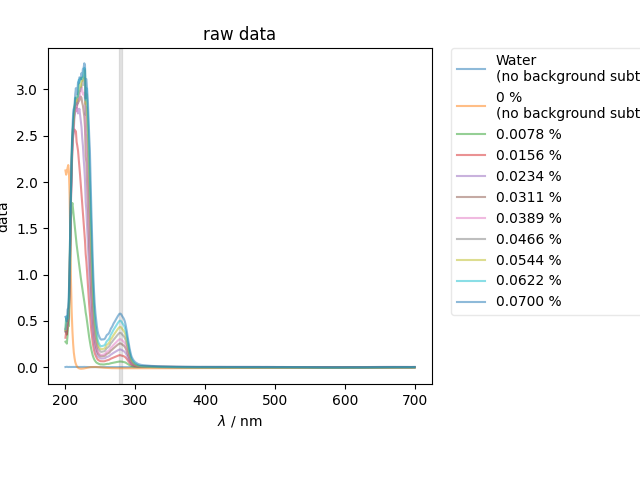

Note
Go to the end to download the full example code
BSA UV-Vis Calibration¶
This example is specifically designed to process data from a BSA calibration curve lab exercise.
To run the curve for your data:
Make sure the data is stored on google drive in the exp_data/UV_Vis/BSA_calib directory, and your computer is set up so that your _pyspecdata file points to google drive.
Just make a copy of this file, change the name of the BSW file to point to your data
Then edit the table inside the OrderedDict below so that it gives the correct labels and scan names for all the spectra in your run.
edit the background parameter below so that it points to the scan that you want to function as your baseline/background. - We would rather record the raw absorbance values, rather than rely on
the spectrometer to subtract and hide the absorbance values of our baseline.
- 
the experiments present in this file are: dict_keys(['UP_H2O', 'K-PBSbuffer', 'J-0p0078%BSA', 'H-0p0156%BSA', 'G-0p0234%BSA1', 'F-0p0311%BSA', 'G-0p0234%BSA_actual', 'E-0p0389%BSA', 'D-0p0466%BSA', 'C-0p0544%BSA', 'B-0p0622%BSA', 'A-0p0700%BSA'])
1: raw data |||nm
2: calibration curve |||None
from pylab import *
from pyspecdata import *
import numpy as np
import matplotlib.pyplot as plt
from collections import OrderedDict
import sympy as sp
# {{{ some constants
wv = "$\\lambda$"
wv_range = (276, 281) # range of wavelengths we consider to be our peak
# }}}
# HERE we get dictionaries of nddata
dataWKBSA = find_file(
"221110_BSAexerciseWK_0p07-0percentBSAcalibration.BSW", exp_type="UV_Vis/BSA_Exercise"
)
print("the experiments present in this file are:", dataWKBSA.keys())
# from our notebook, we get the following info
# think of this like a dictionary -- what is the sample called (on the left)
# and what's its scan label (on the right). **Ideally** the scan labels
# shouldn't be this complicated -- they should just be single letters, as noted
# in the protocol.
#
# Code below expects that when the label/key below is a concentration, it has a % symbol
list_of_runs = OrderedDict(
[
("Water", "UP_H2O"),
("0 %", "K-PBSbuffer"),
("0.0078 %", "J-0p0078%BSA"),
("0.0156 %", "H-0p0156%BSA"),
("0.0234 %", "G-0p0234%BSA_actual"),
("0.0311 %", "F-0p0311%BSA"),
("0.0389 %", "E-0p0389%BSA"),
("0.0466 %", "D-0p0466%BSA"),
("0.0544 %", "C-0p0544%BSA"),
("0.0622 %", "B-0p0622%BSA"),
("0.0700 %", "A-0p0700%BSA"),
]
)
background = (
"0 %" # this is the label of the thing we want to subtract as the background
)
with figlist_var() as fl:
# {{{ first, just show the raw data and the region of the spectrum that we intend to slice
bg_data = dataWKBSA[list_of_runs[background]]
fl.next("raw data", legend=True)
plt.axvspan(wv_range[0], wv_range[1], color="k", alpha=0.1)
for thislabel, thisscan in list_of_runs.items():
if thislabel in [background, "Water"]:
fl.plot(
dataWKBSA[thisscan],
label=thislabel + "\n(no background subtraction)",
alpha=0.5,
)
else:
fl.plot(dataWKBSA[thisscan] - bg_data, label=thislabel, alpha=0.5)
# }}}
# {{{ pull a list of all of the spectra whose labels express a concentration
# (percentage), as well as an array of floating point values for the
# corresponding concentrations
conc_labels = [k for k, v in list_of_runs.items() if "%" in k]
conc_values = array([float(j.replace("%", "")) for j in conc_labels])
bg_data = dataWKBSA[list_of_runs[background]]
all_data = concat(
[dataWKBSA[list_of_runs[k]] - bg_data for k in conc_labels], "concentration"
).setaxis("concentration", conc_values)
# }}}
# {{{ now, gather the data in to a 2D array, so that I can just average the peak and plot the calibration curve
A280 = all_data[wv:wv_range].mean(wv)
fl.next("calibration curve")
fl.plot(A280, "o")
c = A280.polyfit("concentration", order=1)
fl.plot(A280.eval_poly(c, "concentration"))
# }}}
# {{{ use sympy to print the fit equation
conc_symb = sp.symbols("c", real=True)
expr = sum([conc_symb ** j * sp.Float(c[j], 3) for j in range(len(c))])
plt.text(
0.5,
0.5,
sp.latex(expr),
transform=gca().transAxes,
va="center",
ha="center",
size=20,
)
# }}}
Total running time of the script: (0 minutes 1.481 seconds)